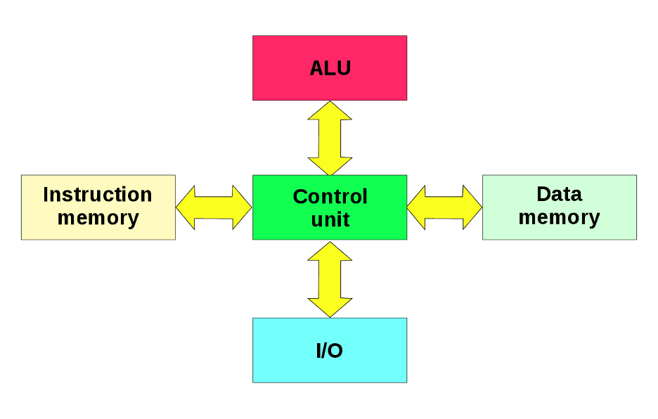

.svg)

.svg)
Архитектура первых компьютеров
В предыдущей статье была рассмотрено внутреннее устройство компьютеров, на заре их появления. А сейчас давайте узнаем, как была устроена архитектура машин того времени.
Архитектура фон Неймана
Архитектура фон Неймана строилась на следующих принципах:
- Принцип двоичности: информация в компьютере представляется в виде двоичного кода.
- Принцип программного управления: программа представляет собой набор команд, которые процессор выполняет друг за другом в определенном порядке.
- Принцип однородности памяти: программы и данные хранятся вместе в памяти компьютера.
- Принцип адресуемости памяти: память состоит из пронумерованных ячеек, к которым процессор в произвольным момент времени имеет доступ.
- Принцип условного перехода: в программе возможно присутствие команд условного перехода, которые изменяют последовательность выполнения команд.
Основным недостатком этой архитектуры является ограничение пропускной способности между памятью и процессором. Из-за того, что программа и данные не могут считываться одновременно, пропускная способность между памятью и процессором существенно ограничивает скорость работы процессора. В дальнейшем, данную проблему решили с помощью введения кеша, что вызвало другие проблемы(например, уязвимость Meltdown).
Справедливости ради необходимо уточнить, что данные идеи не являются идеями Джона фон Неймана в полной степени. Также в их разработке участвовали ещё несколько ученых, пионеров компьютерной техники: Джон Преспер Экерт и Джон Уильям Мокли.
Гарвардская архитектура
Гарвардская архитектура была разработана в 30-е годы прошлого века Говардом Эйкеном в Гарвардском университете (Невероятно, но факт). В отличии от архитектуры фон Неймана, Гарвардская подразумевала разные хранилища для данных и инструкций, а также разные каналы их передачи. Такой подход позволял одновременно считывать команда из программы и данные из памяти, что вело к значительному увеличению общей производительности компьютера. Но, в тоже время, такая схема усложняет саму систему. В дальнейшем Гарвардская архитектура проиграла архитектуре фон Неймана, отчасти из-за этого фактора.
Гарвардская архитектура
Итог
Фон Нейман - это поистине великий изобретатель. Именно его архиктетура в результате стала использоваться в компьютерах не только того времени, но и заложила фундамент для построения архитектур уже в современных процессорах.